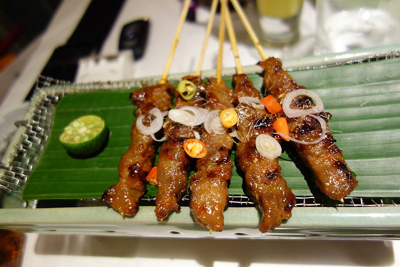

Sate Ayam

Sate/satay is Indonesian skewered dishes, typically meat. Ayam is Indonesian for chicken. So, sate ayam is simply, skewered chicken.
The most popular choice of carb for sate is usually lontong/steamed rice cakes. But you can serve sate with steamed white rice, or Indonesian fried rice/nasi goreng too.
Ingredients:
Peanut Sauce
- 250 gram peanut, toasted/roasted
- 3 candlenuts
- 6 red cayenne chilies
- 4 tablespoon coconut palm sugar
- 2 and a half teaspoon salt
- 600 ml water
Satay
- 600 gram chicken thigh meat, cut into half inch cubes
- 4 tablespoon sweet soy sauce / kecap manis
- 2 teaspoon oil
- bamboo skewers (about 20)
Accompaniments
- sweet soy sauce / kecap manis
- lime wedges
- deep fried shallots (bawang goreng)
Steps:
Peanut Sauce
- In a food processor, grind together peanuts, candlenuts, and chilies.
- Transfer to a saucepot along with the rest of the peanut sauce ingredients, and bring to a boil. Reduce heat to a simmer and continue cooking until the sauce thickens. Turn off heat.
Satay
- Place chicken, sweet soy sauce, oil, and 150 gram of peanut sauce in a mixing bowl. Mix together and marinate for 30 minutes.
- Skewer the marinated chicken with bamboo skewers. Grill/broil until cooked and slightly charred, baste with marinating sauce as needed.
- Serve the satay with peanut sauce and accompaniments.
Back to top